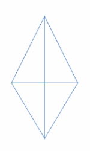
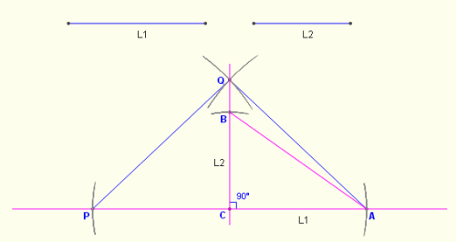

This page shows how to construct a right triangle that has both the given leg lengths.
The above animation is available as a printable step-by-step instruction sheet, which can be used for making handouts or when a computer is not available.

It is possible to draw more than one triangle has the side lengths as given. You can use the triangle to the left or right of the initial perpendicular, and also draw them below the initial line. All four are correct in that they satisfy the requirements, and are congruent to each other.
This construction works by effectively building two congruent triangles. The image below is the final drawing above with the blue lines PQ and QA added

| Argument | Reason | |
|---|---|---|
| We first prove that ∆BCA is a right triangle | ||
| 1 | CP is congruent to CA | They were both drawn with the same compass width |
| 2 | PQ is congruent to AQ | They were both drawn with the same compass width |
| 3 | CQ is common to both triangles ∆PQC and ∆AQC | Common side |
| 4 | Triangles ∆PQC and ∆AQC are congruent | Three sides congruent (SSS). |
| 5 | ∠QCP, ∠QCA are congruent | CPCTC. Corresponding parts of congruent triangles are congruent |
| 6 | m∠QCA = 90° | ∠QCA and ∠QCP are a linear pair and (so add to 180°) and congruent so each must be 90° |
| 7 | ∆BCA is a right triangle | ∠BCA = 90°. |
| We now prove the triangle is the right size | ||
| 8 | CA is congruent to the given leg L1 | CA copied from L1. See Copying a segment. |
| 9 | BC is congruent to the given leg L2 | Drawn with same compass width |
| 10 | ∆BCA is a right triangle with the desired side lengths | (7), (8), (9) |